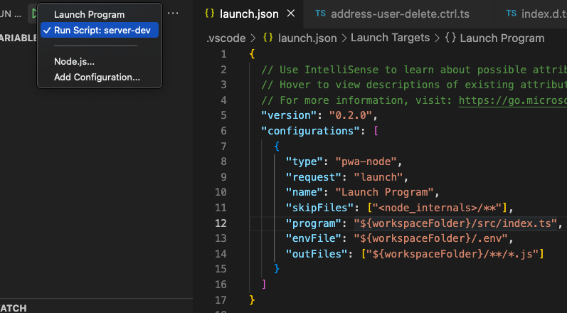

<meta charset="utf-8">
<html lang="ko">
<head>
    <link rel="stylesheet" type="text/css" href="./../style.css" />
    <title>[ Typescript ] VsCode에서 Typescript  Debug 하는법 - YEOL (How to debug on VsCode When i use Typescript)</title>
</head>
<body id="tt-body-page" class="">
<div id="wrap" class="wrap-right">
    <div id="container">
        <main class="main ">
            <div class="area-main">
                <div class="area-view">
                    <div class="article-header">
                        <div class="inner-article-header">
                            <div class="box-meta">
                                <h2 class="title-article">[ Typescript ] VsCode에서 Typescript  Debug 하는법 - YEOL (How to debug on VsCode When i use Typescript)</h2>
                                <div class="box-info">
                                    <p class="category">TS, JS/typescript</p>
                                    <p class="date">2022-05-11 16:46:23</p>
                                </div>
                            </div>
                        </div>
                    </div>
                    <hr>
                    <div class="article-view">
                        <div class="contents_style">
                            <h4 data-ke-size="size20">환경&nbsp;</h4>
<p data-ke-size="size16">Mac m1, VScode, node 16</p>
<h4 data-ke-size="size20">개요</h4>
<p data-ke-size="size16">typescript를 할 때 debug를 돌리려고 하다 보면 모듈을 못 찾거나 다른 방식으로 하려 하면 손이 좀 갑니다.<b></b></p>
<p data-ke-size="size16">&nbsp;</p>
<h2 data-ke-size="size26"><b>- VScode Debug Setting</b></h2>
<p data-ke-size="size16">&nbsp;</p>
<p data-ke-size="size16">괜히 내부에서 돌리지 말고 package.json 에서 돌립시다.&nbsp;</p>
<p data-ke-size="size16">먼저 server 돌려줄 scripts 하나를 만들어줍시다.</p>
<p data-ke-size="size16">&nbsp;</p>
<p><figure class="imageblock alignCenter" >
    <span data-lightbox="lightbox">
        
    </span>
    <figcaption></figcaption>
</figure></p>
<p data-ke-size="size16"></p>
<p data-ke-size="size16">아래와 같이 디버그 모드에서 디버그를 내가 설정한 스크립트로 실행합니다.</p>
<p><figure class="imageblock alignCenter" >
    <span data-lightbox="lightbox">
        
    </span>
    <figcaption></figcaption>
</figure></p>
<p data-ke-size="size16">&nbsp;</p>
<p data-ke-size="size16">별거 아닌 거에 좀 걸렸네요 후... 성실한 코딩 하세요.</p>
                        </div>
                        <br/>
                        <div class="tags">
                            #Debug #typescript #VSCode 
                        </div>
                    </div>
                </div>
            </div>
        </main>
    </div>
</div>
</body>
</html>
